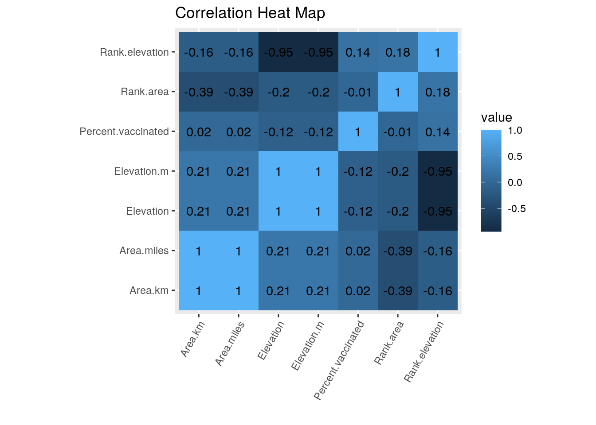
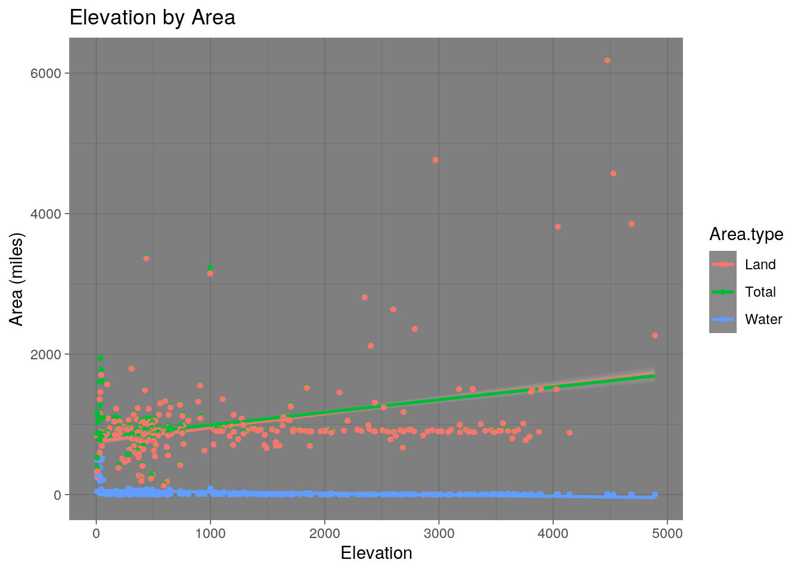
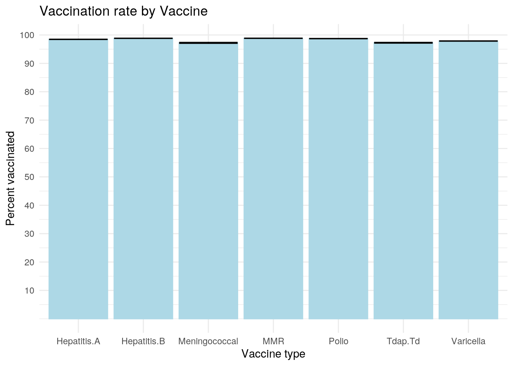
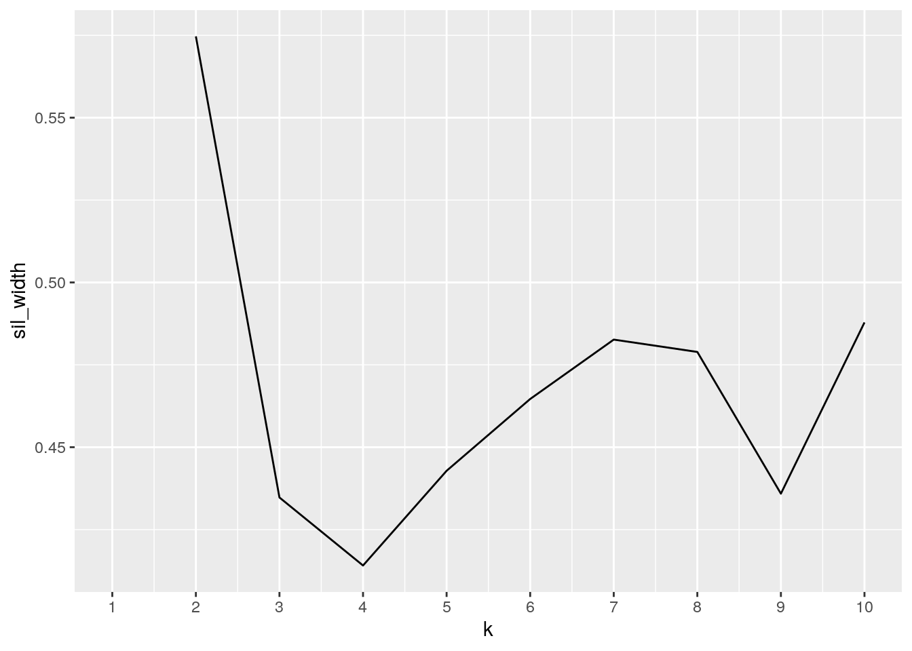
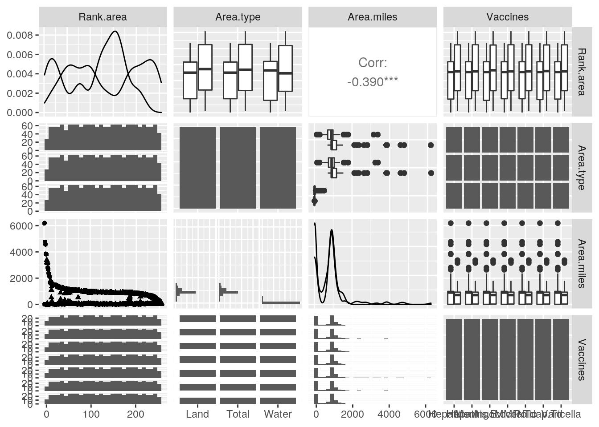
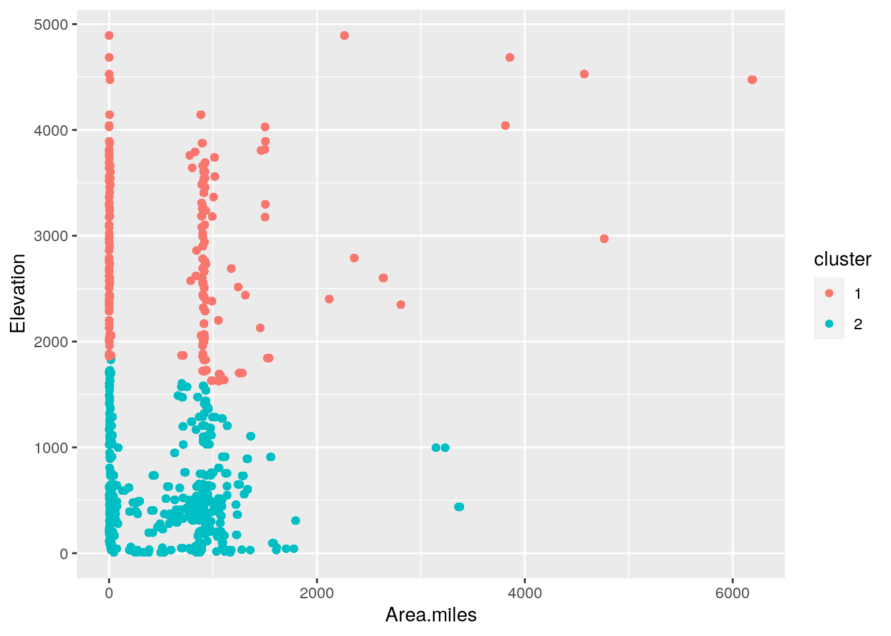

## paste this chunk into the ```{r setup} chunk at the top of your project 1 .Rmd file
knitr::opts_chunk$set(echo = TRUE, eval = TRUE, fig.align = "center", warning = F, message = F,
tidy=TRUE, tidy.opts=list(width.cutoff=60), R.options=list(max.print=100))Introduction
\(~\)
All three datasets used in this project provide data on all the Texas counties. CountyArea.csv provides the land, water, and total area in miles^2 for each Texas county. I chose this dataset because I have always thought the way counties in Texas were shaped and sized were quite arbitrary, and I thought it would be interesting to learn more about the size of Texas counties. CountyElevation.csv has the elevation in feet of each county in Texas. I found this dataset interesting because I tend to think of Texas as quite a level state, though I know that is not actually true. With the rising sea levels due to global warming, I think it is valuable to better understand what our state will look like. Both these datasets were obtained from http://www.texascounties.net/statistics/totalarea.htm and http://www.texascounties.net/statistics/elevation.htm, respectively. The third dataset includes the vaccination rates for the mandatory vaccinations of Texas seventh graders by county in 2019. I chose this dataset because I am very interested in vaccines overall, especially vaccine hesitancy. This data was obtained from the Texas DSHS website, https://www.dshs.texas.gov/immunize/coverage/schools/. Overall, I don’t expect a ton of associations between these datasets as while they share an ID variable, they were sort of chosen at random. However, I would not be surprised if counties with higher elevation also had lower vaccination rates, as higher elevation counties are more rural, and thus have less access to healthcare. I would also expect that the counties with lower elevation will also have higher water areas.
\(~\)
library(tidyverse)## ── Attaching packages ─────────────────────────────────────── tidyverse 1.3.0 ──## ✓ ggplot2 3.3.3 ✓ purrr 0.3.4
## ✓ tibble 3.0.4 ✓ dplyr 1.0.2
## ✓ tidyr 1.1.2 ✓ stringr 1.4.0
## ✓ readr 1.4.0 ✓ forcats 0.5.0## ── Conflicts ────────────────────────────────────────── tidyverse_conflicts() ──
## x dplyr::filter() masks stats::filter()
## x dplyr::lag() masks stats::lag()library(dplyr)
cArea <- read.csv("CountyArea.csv")
cVax <- read.csv("VaxCounty.csv")
cElev <- read.csv("CountyElevation.csv")Here the files are being read in. cArea is the dataset with the areas cVax has the the vaccination rates, and cElev has the elevations
\(~\)
Tidying
cVax$County <- toupper(cVax$County)
cArea$Name <- toupper(cArea$Name)
cElev$Name <- toupper(cElev$Name)
cVax <- cVax %>% pivot_longer(cols = c(Tdap.Td,Meningococcal,Hepatitis.A,Hepatitis.B,MMR, Polio, Varicella), names_to = "Vaccines",values_to = "Vaccination rates")
cArea <- cArea %>% rename(Total = Total.Area..mi2., Land = Land.Area..mi2., Water = Water.Area..mi2.)
cArea <- cArea %>% pivot_longer(cols = c(Total, Land, Water), names_to = "Area.type", values_to = "Area.miles") \(~\)
In this section, pivot_longer was used on cVax to make a column with all the vaccinations and a separate columen with the corresponding vaccination rates. cArea was elongated so all the types of area measurements were in one column, and the measures were in their own separate column.
\(~\)
Joining
areaVax <- cArea %>% inner_join(cVax, by = c("Name" = "County"))
areaVax <- areaVax %>% inner_join(cElev, by = c("Name" = "Name"))
areaVax <- areaVax %>% rename(Rank.area = Rank.x, Rank.elevation = Rank.y)
glimpse(areaVax)## Rows: 5,334
## Columns: 8
## $ Rank.area <fct> 1, 1, 1, 1, 1, 1, 1, 1, 1, 1, 1, 1, 1, 1, 1, 1, 1…
## $ Name <chr> "BREWSTER", "BREWSTER", "BREWSTER", "BREWSTER", "…
## $ Area.type <chr> "Total", "Total", "Total", "Total", "Total", "Tot…
## $ Area.miles <fct> "6,192.30", "6,192.30", "6,192.30", "6,192.30", "…
## $ Vaccines <chr> "Tdap.Td", "Meningococcal", "Hepatitis.A", "Hepat…
## $ `Vaccination rates` <fct> 98.00%, 97.00%, 96.00%, 100.00%, 100.00%, 100.00%…
## $ Rank.elevation <fct> 4, 4, 4, 4, 4, 4, 4, 4, 4, 4, 4, 4, 4, 4, 4, 4, 4…
## $ Elevation <fct> "4,475", "4,475", "4,475", "4,475", "4,475", "4,4…\(~\)
Because the datasets all had at least one additional row containing different statistics (totals or averages), an inner join was performed. In the join, one row was lost from cArea and cVax, just containing the total values, and two rows were lost from cElev, one containing average values, and an extra row due to weird formatting of the column names. Two rows containing the ranks for the elevations and areas of the counties were renamed to make it more clear which one was which.
\(~\)
areaVax <- areaVax %>% mutate(Rank.area = as.numeric(gsub(",", "", Rank.area)), .keep = "unused")
areaVax <- areaVax %>% mutate(Rank.elevation = as.numeric(gsub(",", "", Rank.elevation)), .keep = "unused")
areaVax <- areaVax %>% mutate(Elevation = as.numeric(gsub(",", "", Elevation)), .keep = "unused") %>% mutate(Elevation.m = Elevation*0.3048)
areaVax <- areaVax %>% mutate(Area.miles = as.numeric(gsub(",", "", Area.miles)), .keep = "unused") %>% mutate(Area.km = Area.miles*2.58999)
areaVax <- areaVax %>% mutate(Percent.vaccinated = as.numeric(gsub("%", "", `Vaccination rates`)), .keep = "unused")## Warning: Problem with `mutate()` input `Percent.vaccinated`.
## ℹ NAs introduced by coercion
## ℹ Input `Percent.vaccinated` is `as.numeric(gsub("%", "", `Vaccination rates`))`.## Warning in mask$eval_all_mutate(dots[[i]]): NAs introduced by coercionNAs are introduced by coercion as there are some values with “NR” in the the Vaccination rates column as they were not able to get data.
\(~\)
Summarizing
numberCounties <- areaVax %>% summarize(n_distinct(Name))
numberCounties## # A tibble: 1 x 1
## `n_distinct(Name)`
## <int>
## 1 254This table shows the number of unique values in the name column, which contains the county names. It contains 254 counties, the total number of counties in the state of Texas.
\(~\)
maxAreas <- areaVax %>% group_by(Name) %>% summarize(totalArea = max(Area.miles), elevationRank = max(Rank.elevation)) %>% arrange(-totalArea)## `summarise()` ungrouping output (override with `.groups` argument)maxAreas## # A tibble: 254 x 3
## Name totalArea elevationRank
## <chr> <dbl> <dbl>
## 1 BREWSTER 6192. 4
## 2 PECOS 4765. 38
## 3 HUDSPETH 4572. 3
## 4 PRESIDIO 3856. 2
## 5 CULBERSON 3813 6
## 6 WEBB 3376. 176
## 7 VAL VERDE 3233. 124
## 8 CROCKETT 2807. 64
## 9 REEVES 2642. 52
## 10 TERRELL 2358. 42
## # … with 244 more rowsThis shows the max area by county, giving the total area for each county, which is then arranged in descending order by the area. The elevation rank is also included.
\(~\)
areaVax %>% filter(Area.type == "Water") %>% summarise(cor(Area.miles, Elevation, use = "pair"))## # A tibble: 1 x 1
## `cor(Area.miles, Elevation, use = "pair")`
## <dbl>
## 1 -0.316This shows the correlation between area and elevation.
\(~\)
meanVax <- areaVax %>% group_by(Vaccines) %>% summarize(MeanPercent = mean(na.omit(Percent.vaccinated))) %>% arrange(MeanPercent)## `summarise()` ungrouping output (override with `.groups` argument)meanVax## # A tibble: 7 x 2
## Vaccines MeanPercent
## <chr> <dbl>
## 1 Meningococcal 97.2
## 2 Tdap.Td 97.3
## 3 Varicella 97.9
## 4 Hepatitis.A 98.5
## 5 Polio 98.7
## 6 Hepatitis.B 98.8
## 7 MMR 98.8This shows the average percent of seventh graders with each vaccine.
\(~\)
areaVax %>% summarise(max(Rank.elevation), max(Rank.area))## # A tibble: 1 x 2
## `max(Rank.elevation)` `max(Rank.area)`
## <dbl> <dbl>
## 1 254 254This shows the maximum values for the area and elevation ranks.
\(~\)
areaVax %>% group_by(Name) %>% summarize(VaccinationRate = mean(Percent.vaccinated), max(Rank.area)) %>% arrange(VaccinationRate)## `summarise()` ungrouping output (override with `.groups` argument)## # A tibble: 254 x 3
## Name VaccinationRate `max(Rank.area)`
## <chr> <dbl> <dbl>
## 1 COKE 87.7 116
## 2 KING 87.8 141
## 3 GAINES 89.4 22
## 4 SHERMAN 90.6 121
## 5 LIPSCOMB 91.1 111
## 6 HALL 93.6 153
## 7 MONTAGUE 94.1 105
## 8 JACK 94.1 129
## 9 GILLESPIE 94.1 67
## 10 JEFF DAVIS 94.4 11
## # … with 244 more rows\(~\)
Overall, I did not find anything extremely surprising with the summary statistics. Using n_distinct to summarize the Name column was valuable as it allowed me to confirm that no counties were lost in the process of joining the data sets. The next table shows the total area of each county as well as the elevation rank, but does not reveal much. Then, there is a table with the correlation between elevation and the water area of each county. Though not surprising, it did demonstrate a slightly stronger correlation than just the correlation between total area and elevation. There was very little difference in the mean percent vaccinated between the different vaccine types. I found this a little surprising because a lot of anti-vaccine propaganda will attack only one specific vaccine or ingredient, so I had expected there to be a little more discrepancy between the vaccines. The penultimate table shows the maximum values for the area and elevation ranks, which showed that both of them had 254 values, meaning that there were no “ties”. The last table includes the mean vaccination rates by county as well as the area rank.
\(~\)
Visualizing
\(~\)
Heatmap
corm <- areaVax %>% select_if(is.numeric) %>% na.omit() %>% cor() %>% as.data.frame %>% rownames_to_column %>% pivot_longer(-1)
corm %>% ggplot(aes(rowname, name, fill = value)) + geom_tile() + geom_text(aes(label = round(value,2))) + xlab("") + ylab("") + coord_fixed() + theme(axis.text.x = element_text(angle = 60, hjust = 1)) + ggtitle("Correlation Heat Map") \(~\)
This plot is a heatmap demonstrating the correlation between all the numeric variables in the dataset. Since some of the variables are just conversions of other variables (Area.miles and Area.km, Elevation and Elevation.m), they have correlations of 1. There was also a strong negative correlation between the elevation variables and the elevation rank, which makes sense since the rank is based off the elevation. The correlation between the area variables and the area rank was surprisingly low, with a value of only -0.39. After that, the next strongest correlation, though still weak, was between area and elevation, with a correlation of 0.21, and a correlation between the ranks of 0.18. There was an extremely weak negative correlation between the percent of people vaccinated and the elevation.
\(~\)
Area and Elevation
ggplot(data = areaVax, aes(x = Elevation, y = Area.miles, color = Area.type)) + geom_smooth(method="lm") +
geom_point(size = 1) + ggtitle("Elevation by Area") + ylab("Area (miles)") + theme_dark()## `geom_smooth()` using formula 'y ~ x' \(~\)
This plot demonstrates the slight positive correlation between total and land area and elevation. The correlation between land and total areas and elevation is quite weak. The correlation between water area and elevation is not as evident based on this graph, though it is a bit stronger. This correlation is likey due to the fact that the parts of texas with lower elevation tend to be a little more wet.
\(~\)
g <- ggplot(areaVax, aes(x=Vaccines, y=Percent.vaccinated))+geom_bar(stat = "summary",fun=mean, color = "light blue", fill = "light blue") +
geom_errorbar(stat="summary", fun.data=mean_se) + ylab("Percent vaccinated") + xlab("Vaccine type") + ggtitle("Vaccination rate by Vaccine") + theme_minimal() + scale_y_continuous(breaks = c(10,20,30,40,50,60,70,80,90,100))
g## Warning: Removed 105 rows containing non-finite values (stat_summary).
## Warning: Removed 105 rows containing non-finite values (stat_summary). \(~\)
This plot demonstrates how similar the vaccination rates are across all the different types of vaccines. Even with errorbars, there is very little variation in across the different vaccine types. The vaccine with the lowest average rate is the Meningococcal vaccine. This surprised me because the Menigococcal vaccine is required for entrance into Texas colleges and universities.
\(~\)
Clustering
\(~\)
Cluster data
clust_dat <- areaVax %>% select(Area.miles, Elevation, Percent.vaccinated) %>% na.omit()\(~\)
Choosing number of clusters
library(cluster)
sil_width<-vector()
for(i in 2:10){
kms <- kmeans(clust_dat,centers=i) #compute k-means
sil <- silhouette(kms$cluster,dist(clust_dat)) #get sil widths
sil_width[i]<-mean(sil[,3])
}
ggplot()+geom_line(aes(x=1:10,y=sil_width))+scale_x_continuous(name="k",breaks=1:10) #plots sil widths## Warning: Removed 1 row(s) containing missing values (geom_path). \(~\)
This charts the silhouette width for various values of k. A larger silhouette width indicates more cohesive clusters. It is better than using just the WSS because it also takes into account the distance between clusters. This graph shows that k=2 results in the highest silhouette width.
\(~\)
Cluster Analysis
pam1<-clust_dat %>% scale() %>% pam(k=2) #computes the PAM clusters using k=2, scaled to account for difference in the scales of the variables.
pam1## Medoids:
## ID Area.miles Elevation Percent.vaccinated
## [1,] 3980 0.19203030 1.2026219 0.1973221
## [2,] 4610 -0.07949327 -0.7797534 0.1408397
## Clustering vector:
## [1] 1 1 1 1 1 1 1 1 1 1 1 1 1 1 1 1 1 1 1 1 1 1 1 1 1 1 1 1 1 1 1 1 1 1 1 1 1
## [38] 1 1 1 1 1 1 1 1 1 1 1 1 1 1 1 1 1 1 1 1 1 1 1 1 1 1 1 1 1 1 1 1 1 1 1 1 1
## [75] 1 1 1 1 1 1 1 1 1 1 1 1 1 1 1 1 1 1 1 1 1 1 1 1 1 1 1 1 1 1 1 2 2 2 2 2 2
## [112] 2 2 2 2 2 2 2 2 2 2 2 2 2 2 2 2 2 2 2 2 2 2 2 2 2 2 2 2 2 2 2 2 2 2 2 2 1
## [149] 1 1 1 1 1 1 1 1 1 1 1 1 1 1 1 1 1 1 1 1 1 1 1 1 1 1 1 1 1 1 1 1 1 1 1 1 1
## [186] 1 1 1 1 1 1 1 1 1 1 1 1 1 1 1 1 1 1 1 1 1 1 1 1 1 1 1 1 1 1 1 1 1 1 1 1 1
## [223] 1 1 1 1 1 1 1 1 1 1 1 1 1 1 1 1 1 1 1 1 1 1 1 1 1 1 1 1 1 1 2 2 2 2 2 2 2
## [260] 2 2 2 2 2 2 2 2 2 2 2 2 2 2 2 2 2 2 2 2 2 2 2 2 2 2 2 2 2 2 2 2 2 2 2 2 2
## [297] 2 2 2 2 2 2 2 2 2 2 2 2 2 2 2 2 2 2 2 2 2 2 2 2 2 2 2 2 2 2 2 2 2 2 2 2 2
## [334] 2 2 2 2 2 2 2 2 2 2 2 2 2 2 2 2 2 2 2 2 2 2 2 2 2 2 2 2 2 2 2 2 2 2 2 2 2
## [371] 2 2 2 2 2 2 2 2 1 1 1 1 1 1 1 1 1 1 1 1 1 1 1 1 1 1 1 1 1 1 1 1 1 1 1 1 1
## [408] 1 1 1 1 1 1 1 1 1 1 1 1 1 1 1 1 1 1 1 1 1 1 1 1 1 1 1 1 1 1 1 1 1 1 1 1 1
## [445] 1 1 1 1 1 1 1 1 1 1 1 1 1 1 1 1 1 1 1 1 1 1 1 1 1 1 1 1 1 1 1 1 1 1 1 1 1
## [482] 1 1 1 1 1 1 1 1 1 1 1 1 1 1 1 1 1 1 1 1 1 1 1 1 1 1 1 1 1 1 1 1 1 1 1 1 1
## [519] 1 1 1 1 1 1 1 1 1 1 1 1 1 1 1 1 1 1 1 1 1 1 1 1 1 1 1 1 2 2 2 2 2 2 2 2 2
## [556] 2 2 2 2 2 2 2 2 2 2 2 2 2 2 2 2 2 2 2 2 2 2 2 2 2 2 2 2 2 2 2 2 2 2 2 2 2
## [593] 2 2 2 2 2 2 2 2 2 2 2 2 2 2 2 2 2 1 1 1 1 1 1 1 1 1 1 1 1 1 1 1 1 1 1 1 1
## [630] 1 2 2 2 2 2 2 2 2 2 2 2 2 2 2 2 2 2 2 2 2 2 2 2 2 2 2 2 2 2 2 2 2 2 2 2 2
## [667] 2 2 2 2 2 2 1 1 1 1 1 1 1 1 1 1 1 1 1 1 2 2 2 2 2 2 2 2 2 2 2 2 2 2 2 2 2
## [704] 2 2 2 2 2 2 2 2 2 2 2 2 2 2 2 2 2 2 2 2 2 2 2 2 2 2 2 2 2 2 2 2 1 1 1 1 1
## [741] 1 1 1 1 1 1 1 1 1 2 2 2 2 2 2 2 1 1 1 1 1 1 1 1 1 1 1 1 1 1 1 1 1 1 1 1 1
## [778] 2 2 2 2 2 2 2 2 2 2 2 2 2 2 2 2 2 2 2 2 2 2 2 2 2 2 2 2 2 2 2 2 2 2 2 2 2
## [815] 2 2 2 2 2 2 2 2 2 2 2 2 2 2 2 2 2 2 2 2 2 2 2 2 2 2 2 2 2 2 2 2 2 2 2 2 2
## [852] 2 2 2 2 2 2 2 2 2 2 1 1 1 1 1 1 1 1 1 1 1 1 1 1 1 1 1 1 1 1 1 2 2 2 2 2 2
## [889] 2 2 2 2 2 2 2 2 2 2 2 2 2 2 2 2 2 2 2 2 2 2 2 2 2 2 2 2 2 2 2 2 2 2 2 2 2
## [926] 2 2 2 2 2 2 2 2 2 2 2 2 2 2 2 2 2 2 2 2 2 2 2 2 2 2 2 2 2 2 2 2 2 2 2 2 2
## [963] 2 2 2 2 2 2 2 2 2 2 2 2 2 2 2 2 2 2 2 2 2 2 2 2 2 2 2 2 2 2 2 2 2 2 2 2 2
## [1000] 2 2 2 2 2 2 2 2 2 2 2 2 2 2 2 2 2 2 2 2 2 2 2 2 2 2 2 2 2 2 2 2 2 2 2 2 2
## [1037] 2 2 2 2 2 2 2 2 2 2 2 2 2 2 1 1 1 1 1 1 1 1 1 1 1 1 1 1 2 2 2 2 2 2 2 2 2
## [1074] 2 2 2 2 2 2 2 2 2 2 2 2 2 2 2 2 2 2 2 2 2 2 2 2 2 2 2 2 2 2 2 2 2 2 2 2 2
## [1111] 2 2 2 2 2 2 2 2 2 2 2 2 2 2 2 2 2 2 2 2 2 2 2 2 2 2 2 2 2 2 2 2 2 2 2 2 2
## [1148] 2 2 2 2 2 2 2 2 2 2 2 2 2 2 2 2 2 2 2 2 2 2 2 2 2 2 2 2 2 2 2 2 2 2 2 2 2
## [1185] 2 2 2 2 2 2 2 2 2 2 2 2 2 2 2 2 2 2 2 2 2 2 2 2 2 2 2 2 2 2 2 2 2 2 2 2 2
## [1222] 2 2 2 2 2 2 2 2 2 2 2 2 2 2 2 2 2 2 2 2 2 2 2 2 2 2 2 2 2 2 2 2 2 2 2 2 2
## [1259] 2 2 1 1 1 1 1 1 1 1 1 1 1 1 1 1 2 2 2 2 2 2 2 2 2 2 2 2 2 2 2 2 2 2 2 2 2
## [1296] 2 2 2 2 2 2 2 2 2 2 2 2 2 2 2 2 2 2 2 2 2 2 2 2 2 2 2 2 1 1 1 1 1 1 1 1 1
## [1333] 1 1 1 1 1 2 2 2 2 2 2 2 2 2 2 2 2 2 2 2 2 2 2 2 2 2 2 2 2 2 2 2 2 2 2 2 2
## [1370] 2 2 2 2 2 2 2 2 2 2 2 2 2 2 2 2 2 1 1 1 1 1 1 1 1 1 1 1 1 1 1 2 2 2 2 2 2
## [1407] 2 2 2 2 2 2 2 2 2 2 2 2 2 2 2 2 2 2 2 2 2 2 2 2 2 2 2 2 2 2 2 2 2 2 2 2 2
## [1444] 2 2 2 2 2 2 1 1 1 1 1 1 1 1 1 1 1 1 1 1 1 1 1 1 1 1 1 2 2 2 2 2 2 2 2 2 2
## [1481] 2 2 2 2 2 2 2 2 2 2 2 2 2 2 2 2 2 2 2 2 2 2 2 2 2 2 2 2 2 2 2 2 2 2 2 2 2
## [1518] 2 2 2 2 2 2 2 2 2 2 2 2 2 2 2 2 2 2 2 2 2 2 2 2 2 2 2 2 2 2 2 2 2 2 2 2 2
## [1555] 1 1 1 1 1 1 1 1 1 1 1 1 1 1 1 1 1 1 1 1 1 1 1 1 1 1 1 1 1 1 1 1 1 1 1 1 1
## [1592] 1 1 1 1 1 1 1 1 1 1 1 1 1 1 1 1 1 1 1 1 1 1 1 1 1 1 2 2 2 2 2 2 2 2 2 2 2
## [1629] 2 2 2 2 2 2 2 2 2 2 1 1 1 1 1 1 1 1 1 1 1 1 1 1 2 2 2 2 2 2 2 1 1 1 1 1 1
## [1666] 1 1 1 1 1 1 1 1 1 1 1 1 1 1 1 1 1 1 1 1 1 1 1 1 1 1 1 1 1 1 1 1 1 1 1 1 2
## [1703] 2 2 2 2 2 2 2 2 2 2 2 2 2 2 2 2 2 2 2 2 2 2 2 2 2 2 2 2 2 2 2 2 2 2 2 2 2
## [1740] 2 2 2 2 2 2 2 2 2 2 2 2 2 2 2 2 2 2 2 2 2 2 2 2 2 2 2 2 2 2 2 2 2 2 2 2 2
## [1777] 2 2 2 2 2 2 2 2 2 2 2 2 2 2 2 2 2 2 2 2 2 2 2 2 2 2 2 2 2 2 2 2 2 2 2 2 2
## [1814] 2 2 2 2 2 2 2 2 2 2 2 2 2 2 2 2 2 2 2 2 2 2 2 2 2 2 2 2 2 2 2 2 2 2 2 2 2
## [1851] 2 2 2 2 2 2 2 2 2 2 2 2 2 2 2 2 2 2 2 2 2 2 2 2 2 2 2 2 2 2 2 2 2 2 2 2 2
## [1888] 2 2 2 2 2 2 2 2 2 2 2 2 2 2 2 2 2 2 2 2 2 2 2 2 2 2 2 2 2 2 2 2 2 2 2 2 2
## [1925] 2 2 2 2 2 2 2 2 2 2 2 2 2 2 2 2 2 2 2 2 2 2 2 2 2 2 2 2 2 2 2 2 2 2 2 2 2
## [1962] 2 2 2 2 2 2 2 2 2 2 2 2 2 2 2 2 2 2 2 2 2 2 2 2 2 2 2 2 2 2 2 2 2 2 2 2 2
## [1999] 2 2 2 2 2 2 2 2 2 2 2 2 2 2 2 2 2 2 2 2 2 2 2 2 2 2 2 2 2 2 2 2 2 2 2 2 2
## [2036] 2 2 2 2 2 2 2 2 2 2 2 2 2 2 2 2 2 2 2 2 2 2 2 2 2 2 2 2 2 2 2 2 2 2 2 2 2
## [2073] 2 2 2 2 2 2 2 2 2 2 2 2 2 2 2 2 2 2 2 2 2 2 2 2 2 2 2 2 2 2 2 2 2 2 2 2 2
## [2110] 2 2 2 2 2 2 2 2 2 2 2 2 2 2 2 2 2 2 2 2 2 2 2 2 2 2 2 2 2 2 2 2 2 1 1 1 1
## [2147] 1 1 1 1 1 1 1 1 1 1 2 2 2 2 2 2 2 2 2 2 2 2 2 2 2 2 2 2 2 2 2 2 2 2 2 2 2
## [2184] 2 2 2 2 2 2 2 2 2 2 2 2 2 2 2 2 2 2 2 2 2 2 2 2 2 2 2 2 2 2 2 2 2 2 2 2 2
## [2221] 2 2 2 2 2 2 1 1 1 1 1 1 1 1 1 1 1 1 1 1 1 1 1 1 1 1 1 1 1 1 1 1 1 1 1 1 1
## [2258] 1 1 1 1 1 1 1 1 1 1 1 2 2 2 2 2 2 2 2 2 2 2 2 2 2 2 2 2 2 2 2 2 2 2 2 2 2
## [2295] 2 2 2 2 2 2 2 2 2 2 2 2 2 2 2 2 2 2 2 2 2 2 2 2 2 2 2 2 2 2 2 2 2 2 2 2 2
## [2332] 1 1 1 1 1 1 1 1 1 1 1 1 1 1 1 1 1 1 1 1 1 1 1 1 1 1 1 1 1 1 1 1 1 1 1 2 2
## [2369] 2 2 2 2 2 2 2 2 2 2 2 2 2 2 2 2 2 2 2 2 2 2 2 2 2 2 1 1 1 1 1 1 1 1 1 1 1
## [2406] 1 1 1 1 1 1 1 1 1 1 1 1 1 1 1 1 1 1 1 1 1 1 1 1 1 1 1 1 1 1 1 1 1 1 1 1 1
## [2443] 1 1 1 1 1 1 1 1 1 1 1 1 1 1 1 1 1 1 1 1 1 1 1 1 1 1 1 1 1 1 1 1 1 1 1 1 2
## [2480] 2 2 2 2 2 2 2 2 2 2 2 2 2 2 2 2 2 2 2 2 2 2 2 2 2 2 2 2 2 2 2 2 2 2 2 2 2
## [2517] 2 2 2 2 1 1 1 1 1 1 1 1 1 1 1 1 1 1 1 1 1 1 1 1 1 1 1 1 1 1 1 1 1 1 1 1 1
## [2554] 1 1 1 1 1 1 1 1 1 2 2 2 2 2 2 2 2 2 2 2 2 2 2 2 2 2 2 2 2 2 1 1 1 1 1 1 1
## [2591] 1 1 1 1 1 1 1 1 1 1 1 1 1 1 2 2 2 2 2 2 2 2 2 2 2 2 2 2 2 2 2 2 2 2 2 1 1
## [2628] 1 1 1 1 1 1 1 1 1 1 1 1 1 1 1 1 1 1 1 1 1 1 1 1 1 1 1 1 1 1 1 1 1 2 2 2 2
## [2665] 2 2 2 1 1 1 1 1 1 1 1 1 1 1 1 1 1 1 1 1 1 1 1 1 1 1 1 1 1 1 1 1 1 1 1 1 1
## [2702] 1 1 1 1 1 1 1 1 2 2 2 2 2 2 2 2 2 2 2 2 2 2 2 2 2 2 2 2 2 1 1 1 1 1 1 1 1
## [2739] 1 1 1 1 1 1 1 1 1 1 1 1 1 2 2 2 2 2 2 2 2 2 2 2 2 2 2 2 2 2 2 2 2 2 2 2 2
## [2776] 2 2 2 2 2 2 2 2 2 2 2 2 2 2 2 2 2 2 1 1 1 1 1 1 1 1 1 1 1 1 1 1 1 1 1 1 1
## [2813] 1 1 1 1 1 1 1 1 1 1 1 1 1 1 1 1 1 1 1 1 1 1 1 1 1 1 1 1 1 1 1 1 1 1 1 1 1
## [2850] 1 1 1 1 1 1 1 1 2 1 1 1 1 1 1 2 1 1 1 1 1 2 2 1 1 1 1 1 1 1 1 1 1 1 1 1 1
## [2887] 1 1 1 1 1 1 1 1 1 1 1 1 2 2 2 2 2 2 2 2 2 2 2 2 2 2 2 2 2 2 2 2 2 2 2 2 1
## [2924] 1 1 2 2 2 2 2 2 2 2 2 2 2 2 2 2 2 2 2 2 2 2 2 2 2 2 2 2 2 2 2 2 2 2 2 2 2
## [2961] 2 1 1 1 1 1 1 1 1 1 1 1 1 1 1 1 1 1 1 1 1 1 2 2 2 2 2 2 2 2 2 2 2 2 2 2 2
## [2998] 2 2 2 2 2 2 1 1 1 1 1 1 1 1 1 1 1 1 1 1 1 1 1 1 1 1 1 1 1 1 1 1 1 1 1 1 1
## [3035] 1 1 1 1 1 1 1 1 1 1 1 1 1 1 1 1 1 1 1 1 1 1 1 1 1 1 1 1 1 1 1 1 1 1 1 1 1
## [3072] 1 1 1 1 1 1 1 1 1 1 1 1 1 1 1 1 1 1 1 1 1 1 1 1 1 1 1 1 1 1 1 1 1 1 1 1 1
## [3109] 1 1 1 1 1 1 1 1 1 1 1 1 1 1 1 1 1 1 1 1 1 1 1 1 1 1 1 1 1 1 1 1 1 1 1 1 1
## [3146] 1 1 1 1 1 2 2 2 2 2 2 2 2 2 2 2 2 2 2 2 2 2 2 2 2 2 1 1 1 1 1 1 1 1 1 1 1
## [3183] 1 1 1 1 1 1 1 1 1 1 1 1 1 1 1 1 1 1 1 1 1 1 1 1 1 1 1 1 1 1 1 1 1 1 1 1 1
## [3220] 1 1 1 1 1 1 1 1 1 1 1 1 1 1 1 1 1 1 1 1 1 1 1 1 1 1 1 1 1 1 1 1 1 1 1 1 1
## [3257] 1 1 1 1 1 1 1 1 1 1 1 1 1 1 1 1 1 1 1 1 1 1 1 1 1 1 1 1 1 1 1 1 1 1 1 1 1
## [3294] 1 1 1 1 1 1 1 1 1 1 1 1 1 1 1 1 1 1 1 1 1 1 1 1 1 1 1 1 1 1 1 1 1 1 1 1 1
## [3331] 1 1 1 1 1 1 1 1 1 1 1 1 1 1 1 1 1 1 1 1 1 1 1 2 2 2 2 2 2 2 1 1 1 1 1 1 1
## [3368] 1 1 1 1 1 1 1 1 1 1 1 1 1 1 2 2 2 2 2 2 2 2 2 2 2 2 2 2 2 2 2 2 2 2 2 1 1
## [3405] 1 1 1 1 1 1 1 1 1 1 1 1 1 1 1 1 1 1 1 1 1 1 1 1 1 1 1 1 1 1 1 1 1 1 1 1 1
## [3442] 1 1 1 1 1 1 1 1 1 1 1 1 1 1 1 1 1 1 1 1 1 1 1 1 2 2 2 2 2 2 2 2 2 2 2 2 2
## [3479] 2 2 2 2 2 2 2 2 2 2 2 2 2 2 2 2 2 2 2 2 2 2 2 2 2 2 2 2 2 2 2 2 2 2 2 2 2
## [3516] 2 2 2 2 2 2 2 2 2 2 2 2 2 1 1 1 1 1 1 1 1 1 1 1 1 1 1 1 1 1 1 1 1 1 2 2 2
## [3553] 2 2 2 2 2 2 2 2 2 2 2 2 2 2 2 2 2 2 1 1 1 1 1 1 1 1 1 1 1 1 1 1 1 1 1 1 1
## [3590] 1 1 1 1 1 1 1 1 1 1 1 1 1 1 1 1 1 1 1 1 1 1 1 2 2 2 2 2 2 2 2 2 2 2 2 2 2
## [3627] 2 2 2 2 2 2 2 1 1 1 1 1 1 1 1 1 1 1 1 1 1 1 1 1 1 1 1 1 2 2 2 2 2 2 2 2 2
## [3664] 2 2 2 2 2 2 2 2 2 2 2 2 2 2 2 2 2 2 2 2 2 2 2 2 2 2 2 2 2 2 2 2 2 2 2 2 2
## [3701] 2 2 2 2 2 2 2 2 2 2 2 2 2 2 2 2 2 1 1 1 1 1 1 1 1 1 1 1 1 1 1 1 1 1 1 1 1
## [3738] 1 2 2 2 2 2 2 2 2 2 2 2 2 2 2 2 2 2 2 2 2 2 2 2 2 2 2 2 2 2 2 2 2 2 2 2 2
## [3775] 2 2 2 2 2 2 2 2 2 2 2 2 2 2 2 2 2 2 2 2 2 2 2 2 2 2 2 2 2 2 2 2 2 2 2 2 2
## [3812] 2 2 2 2 2 2 2 2 2 2 2 2 2 2 2 2 2 2 2 2 2 2 2 2 2 2 2 2 2 2 2 2 2 2 2 2 2
## [3849] 2 2 2 2 2 2 2 2 2 2 2 2 2 2 2 2 2 2 2 2 2 2 2 2 2 2 2 2 2 2 2 2 2 2 2 2 2
## [3886] 2 2 2 2 2 2 2 2 2 2 2 2 2 2 2 2 2 2 2 2 2 2 2 2 2 2 2 2 2 2 2 2 2 2 2 2 2
## [3923] 2 2 2 2 2 2 2 2 2 2 2 2 2 2 2 2 2 2 2 2 2 2 2 2 2 2 2 2 2 2 2 2 2 2 2 2 2
## [3960] 2 2 2 2 2 2 2 2 2 2 1 1 1 1 1 1 1 1 1 1 1 1 1 1 1 1 1 1 1 1 1 2 2 2 2 2 2
## [3997] 2 2 2 2 2 2 2 2 2 2 2 2 2 2 2 1 1 1 1 1 1 1 1 1 1 1 1 1 1 1 1 1 1 1 1 1 2
## [4034] 2 2 2 2 2 2 2 2 2 2 2 2 2 2 2 2 2 2 2 2 1 1 1 1 1 1 1 1 1 1 1 1 1 1 1 1 1
## [4071] 1 1 1 1 2 2 2 2 2 2 2 2 2 2 2 2 2 2 2 2 2 2 2 2 2 2 2 2 2 2 2 2 2 2 2 2 2
## [4108] 2 2 2 2 2 2 2 2 2 2 2 2 2 2 2 2 2 2 2 2 2 2 2 2 2 2 2 2 2 2 2 2 2 2 2 2 2
## [4145] 2 2 2 2 2 2 2 2 2 2 2 2 2 2 2 2 2 2 2 2 2 2 2 2 2 2 2 2 2 2 2 2 2 2 2 2 2
## [4182] 2 2 2 2 2 2 2 2 2 2 2 2 2 2 2 2 2 2 2 1 1 1 1 1 1 1 1 1 1 1 1 1 1 1 1 1 1
## [4219] 1 1 1 2 2 2 2 2 2 2 2 2 2 2 2 2 2 2 2 2 2 2 2 2 2 2 2 2 2 2 2 2 2 2 2 2 2
## [4256] 2 2 2 2 2 2 2 2 1 1 1 1 1 1 1 1 1 1 1 1 1 1 1 1 1 1 1 1 1 2 2 2 2 2 2 2 2
## [4293] 2 2 2 2 2 2 2 2 2 2 2 2 2 1 1 1 1 1 1 1 1 1 1 1 1 1 1 1 1 1 1 1 1 1 2 2 2
## [4330] 2 2 2 2 2 2 2 2 2 2 2 2 2 2 2 2 2 2 2 2 2 2 2 2 2 2 2 2 2 2 2 2 2 2 2 2 2
## [4367] 2 2 2 2 2 2 2 2 2 2 2 2 2 2 2 2 2 2 2 2 2 2 2 2 2 2 2 2 2 2 2 2 2 2 2 2 2
## [4404] 2 2 2 2 2 2 2 2 2 2 2 2 2 2 2 2 2 2 2 2 2 2 2 2 2 2 2 2 2 2 2 2 2 2 2 2 2
## [4441] 2 2 2 2 2 2 2 2 2 2 2 2 2 2 2 2 2 2 2 2 2 2 2 2 2 2 2 2 2 2 2 2 2 1 1 1 1
## [4478] 1 1 1 1 1 1 1 1 1 1 1 1 1 1 1 1 1 2 2 2 2 2 2 2 2 2 2 2 2 2 2 2 2 2 2 2 2
## [4515] 2 2 2 2 2 2 2 2 2 2 2 2 2 2 2 2 2 2 2 2 2 2 2 2 2 2 2 2 2 2 2 2 2 2 2 2 2
## [4552] 2 2 2 2 2 2 2 2 2 2 2 2 2 2 2 2 2 2 2 2 2 2 2 2 2 2 2 2 2 2 2 2 2 2 2 2 2
## [4589] 2 2 2 2 2 2 2 2 2 2 2 2 2 2 2 2 2 2 2 2 2 2 2 2 2 2 2 2 2 2 2 2 2 2 2 2 2
## [4626] 2 2 2 2 2 2 2 2 2 2 2 2 2 2 2 2 2 2 2 2 2 2 2 2 2 2 2 2 2 2 2 2 2 2 2 2 2
## [4663] 2 2 2 2 2 2 2 2 2 2 2 2 2 2 2 2 2 2 2 2 2 2 2 2 2 2 2 2 2 2 2 2 2 2 2 2 2
## [4700] 2 2 2 2 2 2 2 2 2 2 2 2 2 2 2 2 2 2 2 2 2 2 2 2 2 2 2 2 2 2 2 2 2 2 2 2 2
## [4737] 2 2 2 2 2 2 2 2 2 2 2 2 2 2 2 2 2 2 2 2 2 2 2 2 2 2 2 2 2 2 2 2 2 2 2 2 2
## [4774] 2 2 2 2 2 2 2 2 2 2 2 2 2 2 2 2 2 2 2 2 2 2 2 2 2 2 2 2 2 2 2 2 2 2 2 2 2
## [4811] 2 2 2 2 2 2 2 2 2 2 2 2 2 2 2 2 2 2 2 2 2 2 2 2 2 2 2 2 2 2 2 2 2 2 2 2 2
## [4848] 2 2 2 2 2 2 2 2 2 2 2 2 2 2 2 2 2 2 2 2 2 2 2 2 2 2 2 2 2 2 2 2 2 2 2 2 2
## [4885] 2 2 2 2 2 2 2 2 2 2 2 2 2 2 2 2 2 2 2 2 2 2 2 2 2 2 2 2 2 2 2 2 2 2 2 2 2
## [4922] 2 2 2 2 2 2 2 2 2 2 2 2 2 2 2 2 2 2 2 2 2 2 2 2 2 2 2 2 2 2 2 2 2 2 2 2 2
## [4959] 2 2 2 2 2 2 2 2 2 2 2 2 2 2 2 2 2 2 2 2 2 2 2 2 2 2 2 2 2 2 2 2 2 2 2 2 2
## [4996] 2 2 2 2 2 2 2 2 2 2 2 2 2 2 2 2 2 2 2 2 2 2 2 2 2 2 2 2 2 2 2 2 2 2 2 2 2
## [5033] 2 2 2 2 2 2 2 2 2 2 2 2 2 2 2 2 2 2 2 2 2 2 2 2 2 2 2 2 2 2 2 2 2 2 2 2 2
## [5070] 2 2 2 2 2 2 2 2 2 2 2 2 2 2 2 2 2 2 2 2 2 2 2 2 2 2 2 2 2 2 2 2 2 2 2 2 2
## [5107] 2 2 2 2 2 2 2 2 2 2 2 2 2 2 2 2 2 2 2 2 2 2 2 2 2 2 2 2 2 2 2 2 2 2 2 2 2
## [5144] 2 2 2 2 2 2 2 2 2 2 2 2 2 2 2 2 2 2 2 2 2 2 2 2 2 2 2 2 2 2 2 2 2 2 2 2 2
## [5181] 2 2 2 2 2 2 2 2 2 2 2 2 2 2 2 2 2 2 2 2 2 2 2 2 2 2 2 2 2 2 2 2 2 2 2 2 2
## [5218] 2 2 2 2 2 2 2 2 2 2 2 2
## Objective function:
## build swap
## 1.118375 1.066745
##
## Available components:
## [1] "medoids" "id.med" "clustering" "objective" "isolation"
## [6] "clusinfo" "silinfo" "diss" "call" "data"This step provides you with the middle most point in the clusters.
\(~\)
Visualize Clusters
final <- areaVax %>% na.omit() %>% select(-Name) %>% mutate(cluster = as.factor(pam1$clustering))
library(GGally)## Registered S3 method overwritten by 'GGally':
## method from
## +.gg ggplot2ggpairs(final, columns=1:4, aes(shape=cluster))## `stat_bin()` using `bins = 30`. Pick better value with `binwidth`.## `stat_bin()` using `bins = 30`. Pick better value with `binwidth`.
## `stat_bin()` using `bins = 30`. Pick better value with `binwidth`.
## `stat_bin()` using `bins = 30`. Pick better value with `binwidth`.
\(~\)
Interpret Clusters
ggplot(final, aes(x=Area.miles,y=Elevation, color=cluster))+geom_point()
\(~\)
Goodness of Fit
pam1$silinfo$avg.width## [1] 0.4000714The average silhouette width is 0.40
\(~\)
Clustering conclusions While clustering is fun overall, the clustering of this data provided little insight. Beginning with choosing the number of clusters with k-means, the highest silhouette width acheived was only a little more than 0.5. The average silhouette width acheived through PAM was 0.40, making the clustering weak and likely artifical. Not much can really be learned through this clustering. If I were to do clustering on this data again, I would try to add a larger area variable, like region, which would allow for better testing of the clustering. I also think that including water area was not helpful as it included many extreme values (zeroes). Cluster two was much more closely clustered, especially in comparison to cluster one, which is almost definitely artificial since it is so spread out.